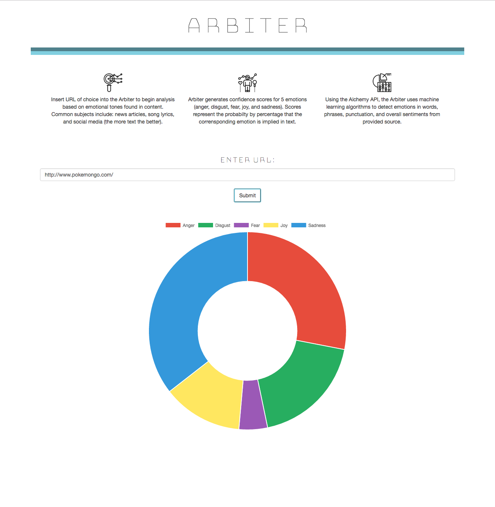
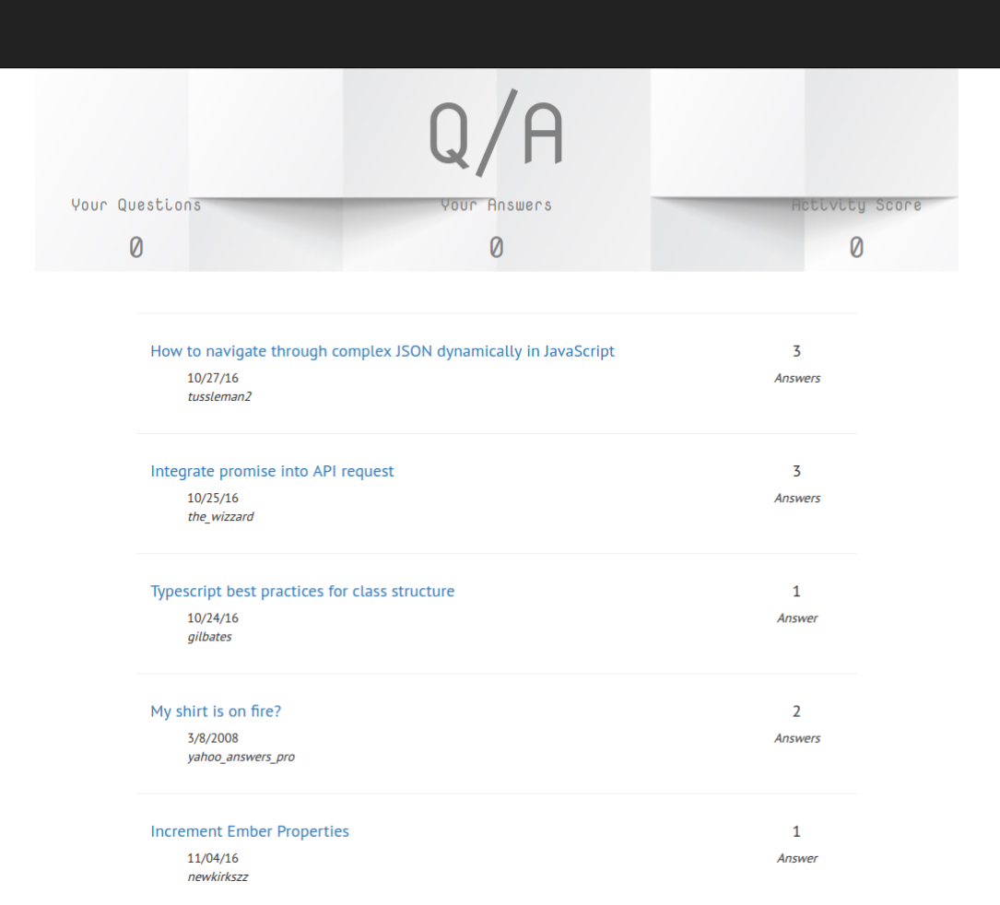

Arbiter
Uses Alchemy api to analyze main text of url and display overall emotional cues of the page.
JavaScript
Node.js

Uses Alchemy api to analyze main text of url and display overall emotional cues of the page.
JavaScript
Node.js
HTML5
CSS 3
Sass
Bootstrap
Git
Pair Programming
PHP
Drupal
MySQL
JavaScript
Angular
Ember
My decision to become a programmer was fueled by my drive for self-directed learning and my fascination with complex systems. I feel most fulfilled when solving difficult problems in an elegant and efficient manner.
I live in Portland, Oregon and am currently studying JavaScript, PHP and Drupal Development at Epicodus.